訓練課程開始
原地單階高跳換腿訓練
面對剛開始一連串的階梯，陳彥博便利用這樣的地形進行原地單階高跳換腿基礎動作訓練。
- 預備姿勢：將單腳置於前方階梯上，另一腳在後，重心放在髖部，微蹲。雙手成跑步姿，一前一後。聽到教練哨聲後，雙腳用力將身體推蹬至空中，雙手雙腳在空中轉換前後，落地時以腳尖觸地，身體回復至預備姿勢。
- 動作訣竅：起跳時以髖部帶動，感受到全身的重心被拉起來，宛如在空中飛躍。腳尖觸地時盡量輕放，用雙手的擺臂協助身體維持平衡。
在哨音的帶領下，學員們奮力躍起在空中換腳，助教也幫忙確認大家的動作是否正確。該項訓練除了能讓股四頭肌很有感覺之外，也鍛鍊了平時比較用不到的腿部肌群。天氣炎熱，練完第一個動作大家已經開始汗流浹背了。這時彥博很熱血地大喊了一聲：「我們出發吧！」便帶著大家開始「跑階梯」扎實地前進。
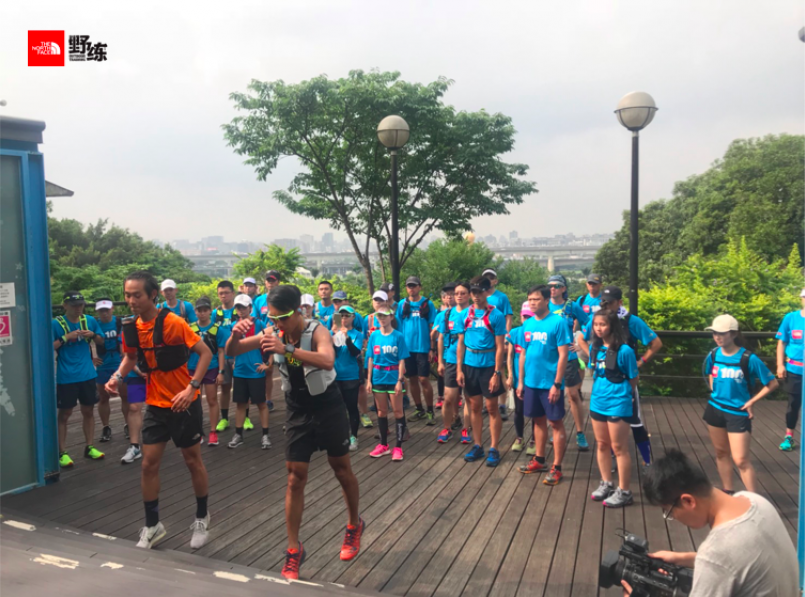
原地單階高跳換腿起跳時雙腳用力將身體推蹬至空中，感受到全身的重心被拉起來。（圖片來源：TNF）
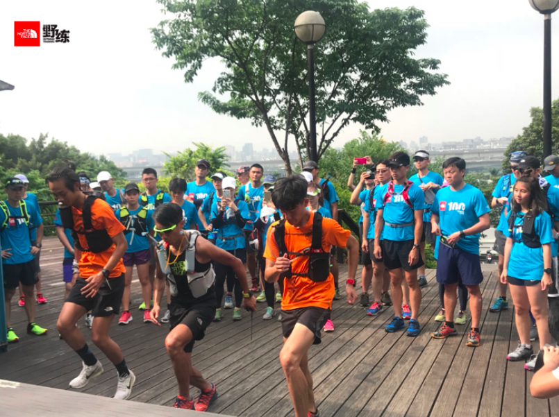
落地時以腳尖觸地，盡量輕放，以雙臂擺動協助身體維持平衡（圖片來源：TNF）
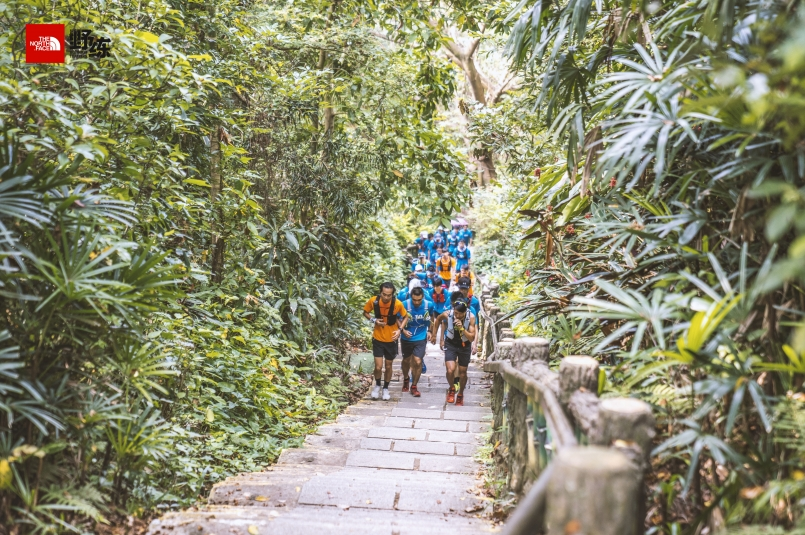
彥博帶著學員們開始實戰演練「跑階梯」（圖片來源：運動筆記／Damon）
越野跑上坡時的小技巧：慢、小
接著往「老地方」可以欣賞台北 101周邊與松山機場飛機起降的觀景平台前進，途中有幾處上坡山徑，彥博除了提醒大家要隨時補充水分之外，邊跑的同時也邊講解越野跑上坡時初階者的小技巧：步伐放慢、放小。一來避免心跳過高，二者可以節省肌力，否則一昧大步、大步地跨，沒多久就會氣力放盡了。
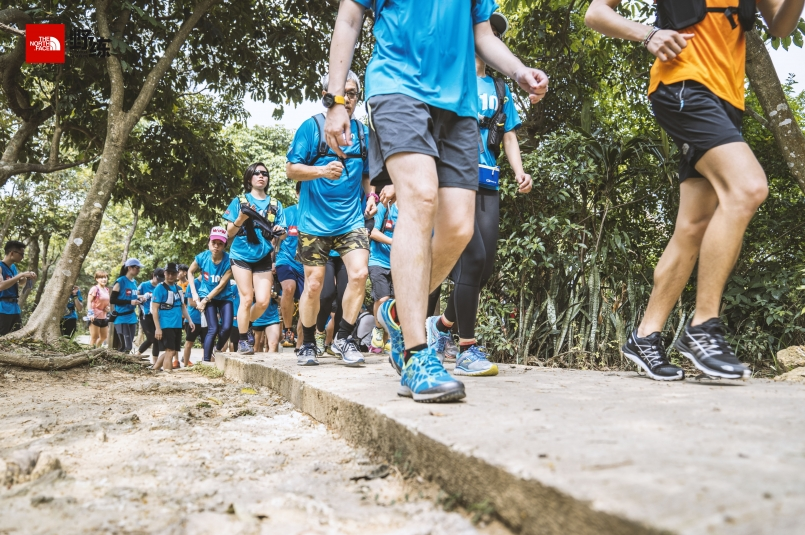
越野跑上坡時，小技巧注意：步伐放慢、放小，避免大步地跨（圖片來源：運動筆記／Damon）
小叮嚀：髖骨放鬆，快翻船時順向倒下
而接下來的路段以下坡居多，彥博提醒大家，下坡的要訣在於髖骨需放鬆，要加速時身體自然往前傾即可，不要急踩煞車。另外，感覺到腳踝快翻船時要順向倒下，身體逆勢抵抗只會扭得更嚴重。
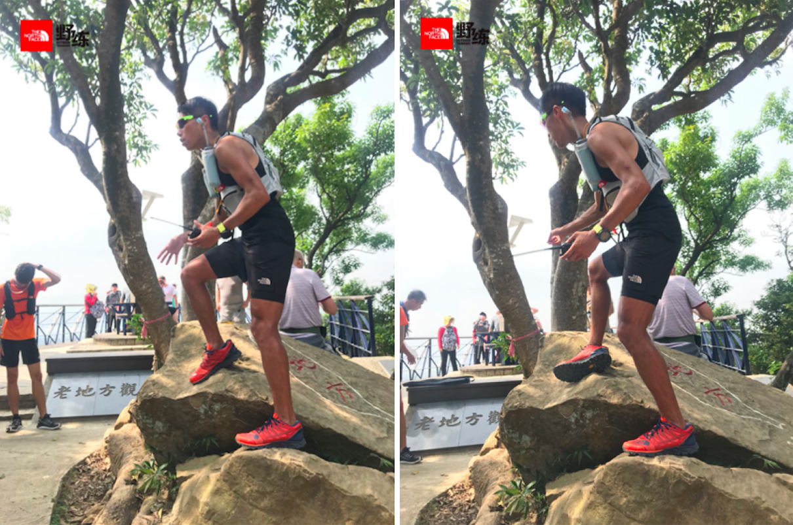
越野跑上坡時，小技巧注意：步伐放慢、放小，避免大步地跨（圖片來源：運動筆記／Damon）
三組進階階梯訓練
從老地方出發後，接著開始「進階」階梯訓練，連續操練三個動作：單腳蹬階跳躍，一次跳兩格階梯，側身轉體上階。這幾個動作都能幫助我們提升越野跑所需要的協調性、肌力以及平衡感。
- 單腳蹬階跳躍：身體呈現單腳站立姿勢，身體微微蹲，面對階梯，單腳一格一格地往上跳。此動作除了訓練股四頭肌與小腿肌之外，訣竅在於維持單腳跳躍時的身體平衡，重心需放於髖部，以雙手擺動協助平衡。
- 一次跳兩格階梯：身體呈前弓後步姿態，微蹲，起動時後腳推蹬向前，躍起跳上兩格階梯，接著前後腳連續循環向上。此動作可以訓練股二頭肌與髖部肌群，訣竅在於重心轉移以及推蹬上階的節奏感。
- 側身轉體上階：雙腳與肩同寬站立為預備姿勢，身體左側面對階梯，以橫向交叉步的方式上階梯，反覆兩回後，身體再轉為右側面對階梯，橫向交叉步上階梯。左右側身輪流轉體交叉步上階梯。此動作能訓練跑者較少用到的腿部側向肌群與髖部的靈活度，訣竅在於由身體引導重心，雙腿前進配合重心順勢擺動，上半身穩定，髖部以下則保持放鬆。
（橫向交叉步詳細說明：將右膝抬高、右腿往左腿前方外側跨出，讓雙腿交叉，右腳於左腳外側落地上階梯，左腿從右腿後方往左橫向上階梯。接著右腿往左腿後方擺去，雙腿再次交叉但右腿在左腿後方上階梯，左腿從右腿前方往左橫向上階梯。）
野練能體驗別於一般路跑所體驗不到的動作與肌群，所以訓練起來非常有趣，不必特別上健身房，整個戶外都是我們的訓練場。縱使天氣很熱，倒也樂在其中，學員們努力讓自己的手腳協調並用。
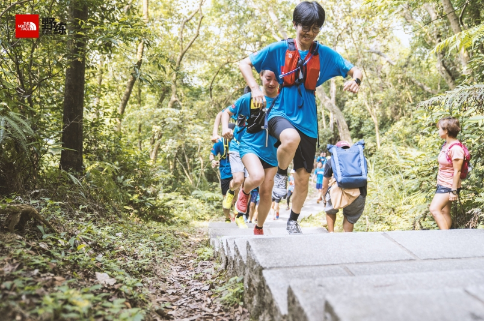
單腳蹬階跳躍。（圖片來源：運動筆記／Damon）
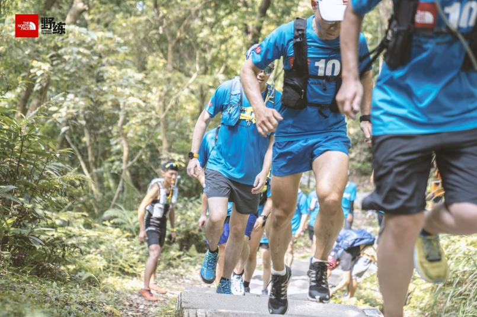
一次跳兩格階梯。（圖片來源：運動筆記／Damon）
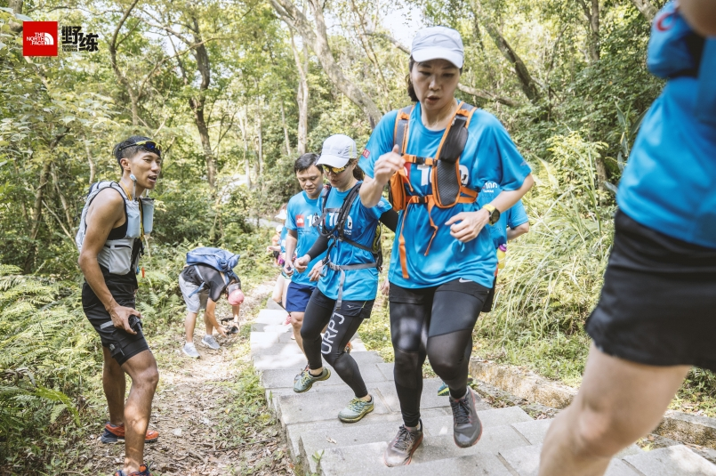
側身轉體上階。（圖片來源：運動筆記／Damon）
魔鬼訓練：鑽人縫 Ｓ型上坡衝刺
經過一連串精實的訓練後，終於到了折返點，最後階段的訓練卻是最硬的鑽人縫 S 型上坡衝刺。三個小組全部排成一列，取適當間距，哨聲一吹所有人雙腳迅速開合深蹲一次，然後從隊伍的最後一人開始，被彥博拍到肩膀的人就要起跑進行鑽人縫 Ｓ 型衝刺。
- 深蹲動作：蹲下時雙腿盡量與地面維持平行，重心繫於核心，膝蓋不要超過腳尖。起立時挺胸，頸部與脊椎角度維持正常，身體不過度前傾。
- 鑽人縫 Ｓ 型衝刺：反覆衝刺至前方學員側邊，Ｓ型前進。此動作技巧在於重心壓低，並運用核心力量與上半身的擺動來協助重心轉移，迅速朝反方向作用推蹬前進。
除了下半身的肌力以外，這項動作利用了訓練營人多的優勢，鍛鍊越野跑所需要的爆發力與重心移轉，是平常獨自訓練所體驗不到的。只見大家隨著哨音不斷地反覆深蹲並向前衝刺，在這悶熱的高溫裡，既有種魔鬼訓練的感覺，也覺得充實又有趣！
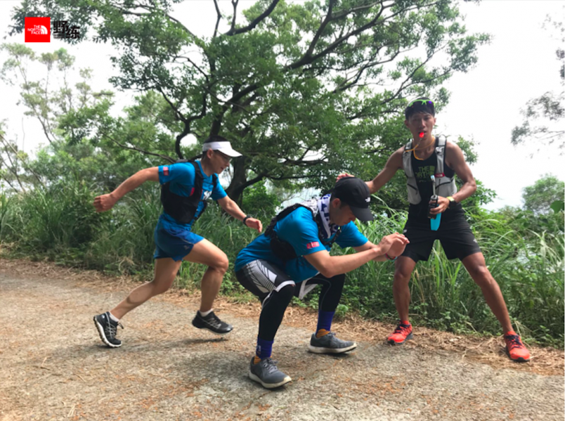
前者預備動作先雙腳開合深蹲（圖片來源：TNF）
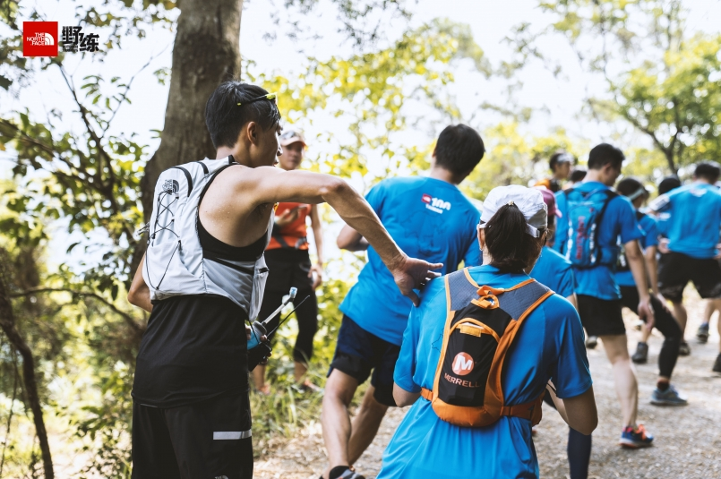
深蹲後，被彥博拍到肩膀的人就要起跑進行鑽人縫Ｓ型衝刺（圖片來源：運動筆記／Damon）
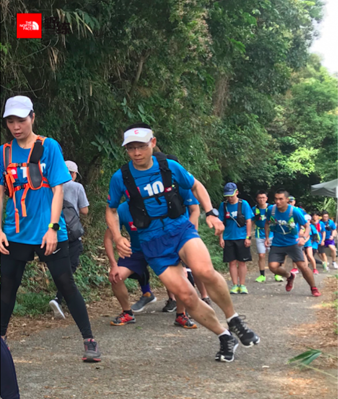
鑽人縫 Ｓ 型衝刺，反覆衝刺至前方學員側邊，Ｓ型前進。（圖片來源：TNF）
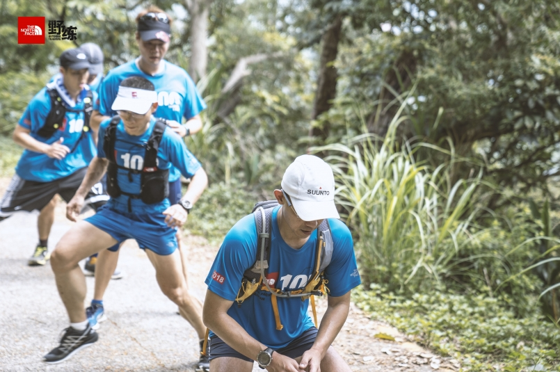
運用下半身的肌力鍛鍊越野跑所需要的爆發力與重心移轉。（圖片來源：運動筆記／Damon）
待 30 名學員全部都衝刺兩趟之後，今天「走到哪就練到哪」的行程隨即告一段落，最後就是將訓練內容串連貫通，原路折返跑回起點圓山大飯店，同時也再三提醒，下坡時「髖骨放鬆、腳踝柔軟」運用方才學到的重心移轉來讓自己的動作更加順暢。
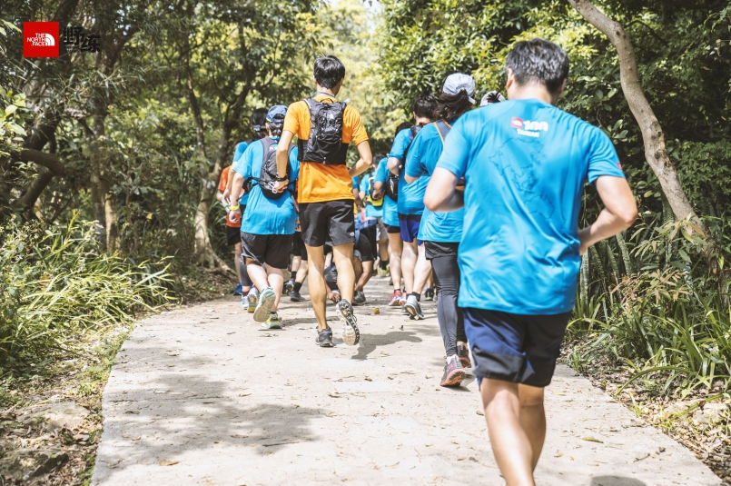
完成了今日扎實課程，學員們奔馳著折返回程。（圖片來源：運動筆記／Damon）
最後衝刺，舒緩收尾刺
最後彥博看前段班的學員衝得很開心，靈機一動，加碼了「雙人臀肌訓練」以及「百米衝刺訓練」，將所有的人不分組別都操練到極致。筆者在最後的百米衝刺時，已用盡所有氣力，最後只能「走」回終點，真的是充分地訓練到了。
- 雙人臀肌訓練：兩人一組面對面，雙手彼此交叉握緊，腳尖抵腳尖。接著雙手同時伸直重心往後靜止，呈現平衡狀態。教練哨音響起後，兩人同時向下深蹲，至大腿與地面平行，待第二聲哨音後再起來回復站姿平衡狀態。此動作除了訓練臀部的肌群以外，更考驗學員之間的平衡感與信任感，只有要一方過於緊張或不信任，動作就永遠無法完成。
- 百米衝刺訓練：毫無保留，用盡全身力氣向前衝刺，衝到腿軟，心跳爆表。
而最後「收操」依舊不馬乎，除了帶領大家緩緩地伸展之外，彥博與助教們還是會一一指導學員們動作。待學員們的身體都伸展、收完操後，今日的 The North Face 戶外訓練營也就在此告一段落啦！
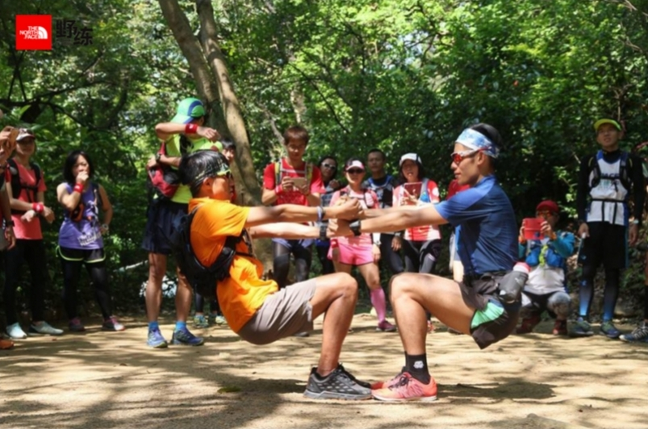
2017 年陳彥博野練戶外訓練營－雙人臀肌訓練動作示範（圖片來源：運動筆記）
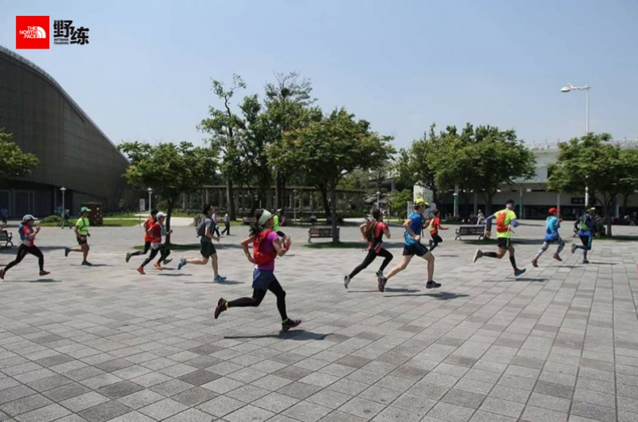
2017年陳彥博野練戶外訓練營－百米衝刺動作示範（圖片來源：運動筆記）